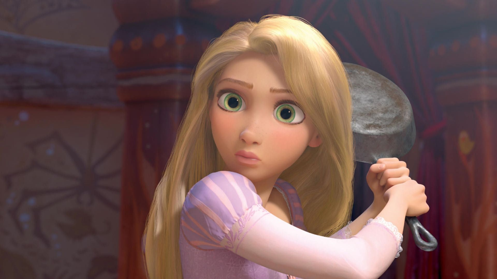

About Tangled
Film ini ditulis oleh Dan Fogelman berdasarkan dongeng dari Jerman berjudul Rapunzel karya Brothers Grimm. Tangled adalah film animasi musikal tahun 2011 yang disutradarai oleh Nathan Greno dan Byron Howard dan diproduksi oleh Roy Conli, John Lasseter dan Glen Keane dari Walt Disney Animation Studios.
Keberanian putri Rapunzel
- Rapunzel diculik ketika masih bayi
- Rapunzel lalu dikurung di sebuah menara
- Dia tidak mengetahui orang tua kandungnya
Pengiri suara Tangled
Beberapa artis menjadi pemeran atau pengisi suara film ini. Mereka adalah :